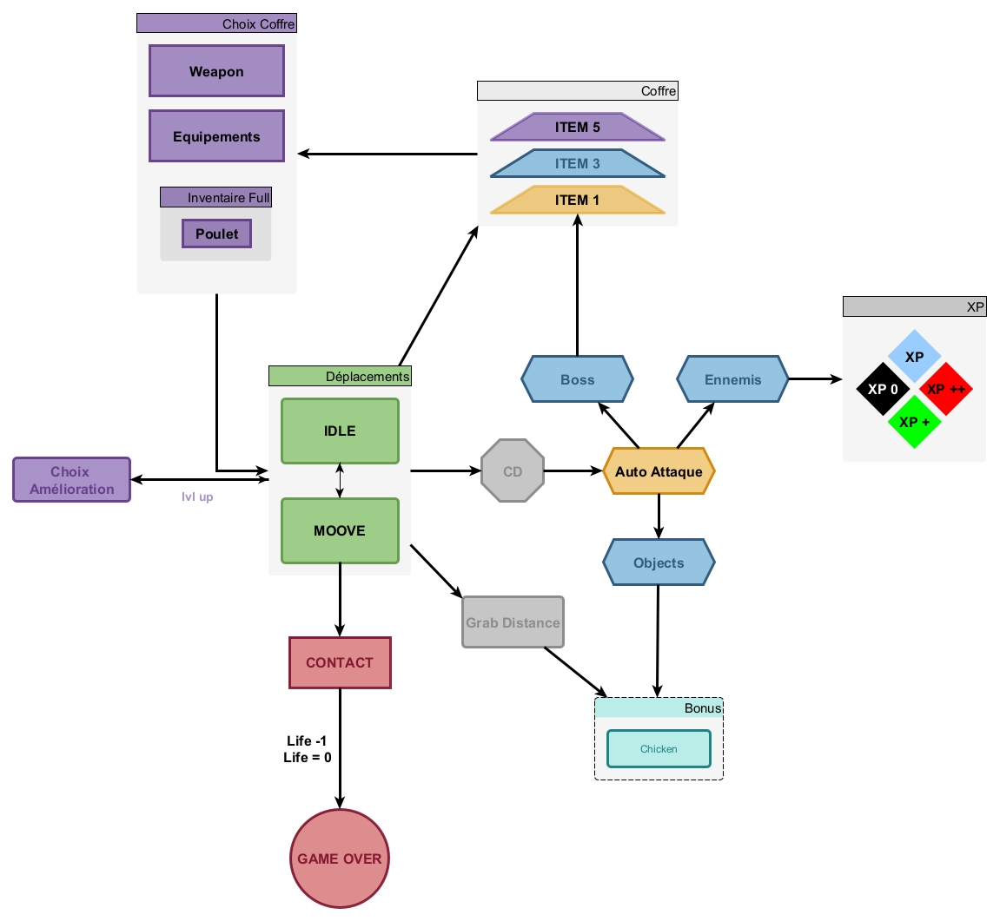
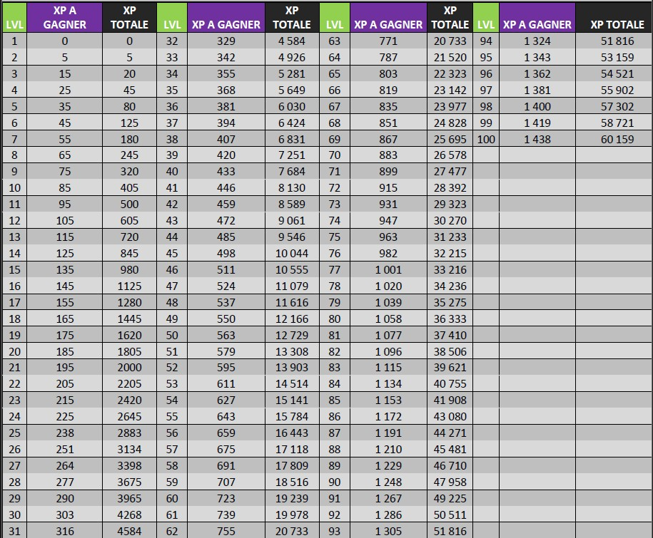

Un survivor nerveux développé avec Playmaker. Survivre 20 minutes en alternant entre le Paradis et l'Enfer. A fast-paced survivor game developed with Playmaker. Survive 20 minutes switching between Heaven and Hell.
Solo Dev & Design
2 Months
Unity (Playmaker)
Survivor
Le cœur du jeu repose sur une mécanique cyclique. Toutes les 4 minutes, l'univers bascule.
The core loop relies on a cyclic mechanic. Every 4 minutes, the world shifts.
J'ai modélisé la boucle de jeu pour qu'elle soit claire et sans friction. Le joueur se déplace pour esquiver ou ramasser des bonus, pendant que l'auto-attaque gérée par un cooldown élimine les menaces.
I mapped out the core loop to be clear and frictionless. The player moves to dodge or grab bonuses, while the cooldown-based auto-attack eliminates threats.

Tuer des ennemis génère des gemmes d'expérience. Une jauge remplie ouvre le menu de choix d'amélioration, tandis que l'élimination de boss permet d'ouvrir des coffres pour looter ou améliorer ses armes et équipements.
Killing enemies spawns experience gems. Filling the bar triggers the upgrade choice menu, whereas defeating bosses drops chests allowing the player to loot or upgrade weapons and equipment.
Le système de progression est basé sur 8 statistiques interconnectées (Vitalité, Vitesse, Taux de tir, Portée, etc.). L'équilibrage a été entièrement pensé sur Excel.
The progression system is based on 8 interconnected statistics (Vitality, Speed, Fire Rate, Range, etc.). The balancing was fully mapped out on Excel.

Challenge : Gérer la courbe d'expérience. Il fallait maintenir un rythme d'obtention de récompenses soutenu pour satisfaire le joueur, tout en augmentant la densité des hordes pour conserver du défi.
Challenge: Managing the experience curve. I needed to maintain a steady reward pace to satisfy the player, while simultaneously increasing horde density to keep the game challenging.
Pour garantir la rejouabilité, j'ai conçu deux classes jouables aux gameplays radicalement opposés. Le Prêtre Isengard excelle à distance grâce à ses projectiles et sa forte récupération, mais souffre d'une très faible mobilité. À l'inverse, le Guerrier Altonis mise sur de lourds dégâts au corps-à-corps et une vitesse de déplacement élevée pour esquiver les hordes.
To ensure replayability, I designed two playable classes with radically opposite playstyles. The Priest Isengard excels at long range with projectiles and high recovery but suffers from very low mobility. Conversely, the Warrior Altonis relies on heavy melee damage and high movement speed to dodge the hordes.
J'ai calibré précisément le système de butin pour équilibrer la frustration et la récompense. Le joueur amasse principalement des gemmes bleues communes offrant peu d'expérience, et des gemmes vertes sur les monstres rares. Les gemmes rouges, générant une quantité massive d'expérience, sont exclusivement réservées à l'élimination des boss.
I precisely calibrated the loot system to balance frustration and reward. The player mainly collects common blue gems offering low experience, and green gems from rare monsters. Red gems, generating a massive amount of experience, are exclusively reserved for boss takedowns.
Le maintien de la jauge de vie repose sur un objet de soin unique le Poulet dont le taux d'obtention a été fixé à 0.1%. Cette rareté absolue force le joueur à prioriser l'esquive plutôt que d'espérer un soin providentiel.
Maintaining the health bar relies on a single healing item the Chicken whose drop rate was set at 0.1%. This absolute rarity forces the player to prioritize dodging rather than hoping for a miraculous heal.
Survivre 20 minutes ne suffit pas pour gagner. La mécanique cyclique impose une double pression systémique. Le joueur remporte la partie uniquement si le nombre de monstres libérés est supérieur au nombre d'âmes mortes dans les flammes. Si ce ratio s'inverse en défaveur du joueur, la défaite est immédiate, même avant la fin du temps imparti.
Surviving 20 minutes is not enough to win. The cyclic mechanic imposes a double systemic pressure. The player wins the game only if the number of freed monsters is higher than the number of souls lost in the flames. If this ratio reverses against the player, defeat is immediate, even before the timer ends.
Plutôt que de faire une interface plate classique, j'ai voulu expérimenter en intégrant un modèle 3D dynamique directement dans l'UI du menu principal.
Rather than using a classic flat interface, I experimented by integrating a dynamic 3D model directly into the main menu UI.
L'objectif pour un projet à plus grande échelle était de créer un espace où le joueur pourrait visualiser instantanément les changements visuels de son équipement et l'impact sur ses statistiques en temps réel.
The goal for a larger-scale version of the project was to create a hub where the player could instantly visualize visual changes to their gear and the impact on their stats in real time.
J'ai développé l'intégralité de la logique du jeu via Playmaker.
I developed the entire game logic using Playmaker.
Ce projet est un prototype inachevé. L'objectif final était d'intégrer un Boss de fin apparaissant au terme des 20 minutes de survie.
This project is an unfinished prototype. The final goal was to feature a Final Boss appearing after the 20-minute mark.
Mécanique prévue : Le boss aurait cumulé les scores des deux mondes. Plus le joueur sauvait d'âmes durant la partie, plus le boss aurait été affaibli. Inversement, si beaucoup d'âmes avaient péri dans les flammes, le combat final serait devenu extrêmement punitif, récompensant ainsi les joueurs proactifs.
Planned Mechanic: The boss would have scaled based on scores from both worlds. The more souls the player saved, the weaker the boss would have been. Conversely, if too many souls burned, the final fight would have become extremely punishing, rewarding proactive players.